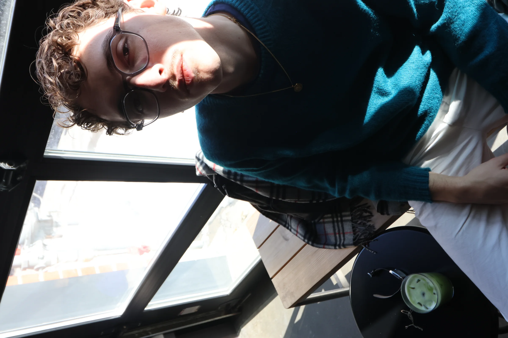
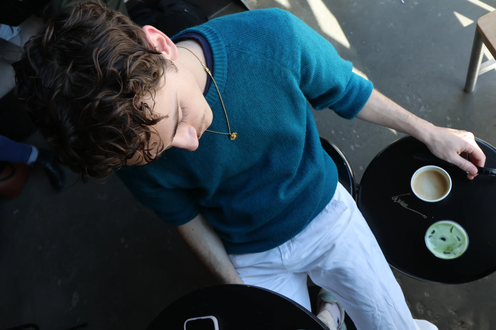
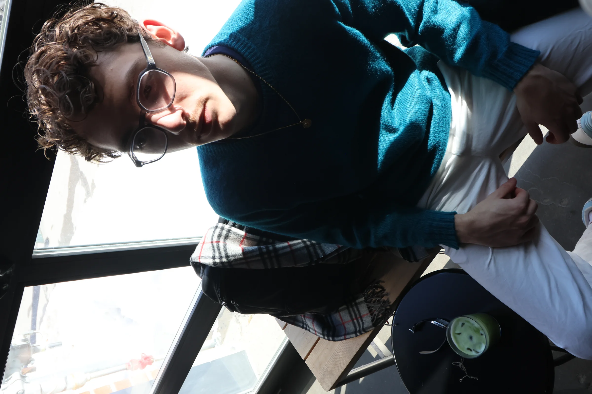

SEBASTIAN HART / JOURNALNO. 01 — 2026
CREATIVE DIRECTION
Editorial / Styling / Creative Direction



Styling is a way of building character — a study of silhouette, gesture and atmosphere.
CONCEPT / STYLING / CREATIVE DIRECTION
SELECTED WORK / 01BACK TO CONTENTS ↗